These are various spectra taken of stars.
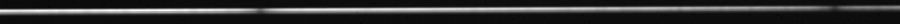
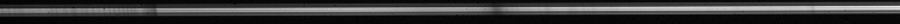
Altair
600 sec exposures @ 470nm
Meade 16" LX200, SBIG ST-8 & SGSAltair
600 sec exposures @ 660nm
Meade 16" LX200, SBIG ST-8 & SGS
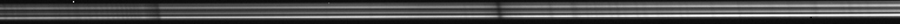
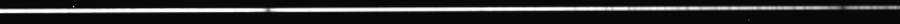
Caph
600 sec exposures @ 660nm
Meade 16" LX200, SBIG ST-8 & SGSCaph
600 sec exposures @ 470nm
Meade 16" LX200, SBIG ST-8 & SGS
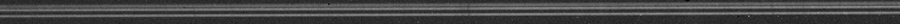
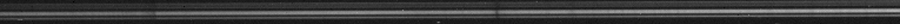
HD168009
600 sec exposures @ 590nm
Meade 16" LX200, SBIG ST-8 & SGSHD168009
600 sec exposures @ 660nm
Meade 16" LX200, SBIG ST-8 & SGS
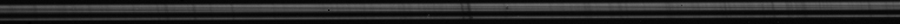
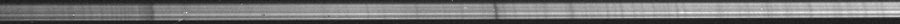
HD182572
600 sec exposures @ 590nm
Meade 16" LX200, SBIG ST-8 & SGSHD182572
600 sec exposures @ 660nm
Meade 16" LX200, SBIG ST-8 & SGS
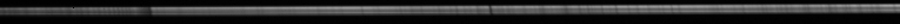
Vega
30 sec exposures @ 470nm
Meade 16" LX200, SBIG ST-8 & SGSArcturus
60 sec exposures @ 660nm
Meade 16" LX200, SBIG ST-8 & SGS
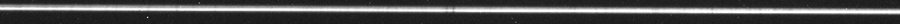
Capella
120 sec exposures @ 540nm
Meade 16" LX200, SBIG ST-8 & SGSCaph
120 sec exposures @ 660nm
Meade 16" LX200, SBIG ST-8 & SGS
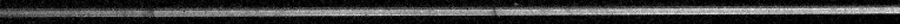
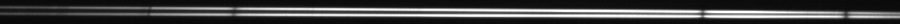
HD144579
600 sec exposures @ 660nm
Meade 16" LX200, SBIG ST-8 & SGSSirius
30 sec exposures @ 550nm
Meade 16" LX200, SBIG ST-8 & SGS